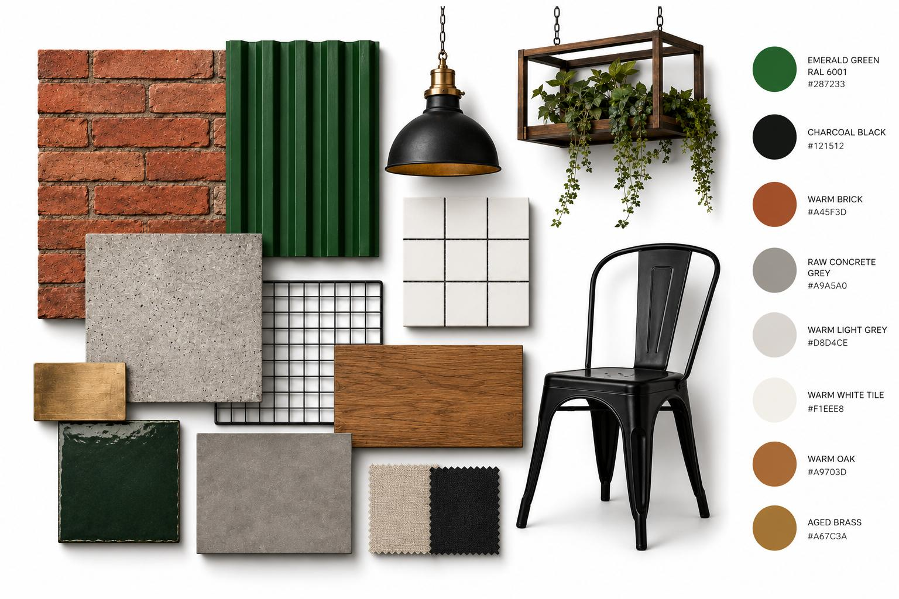
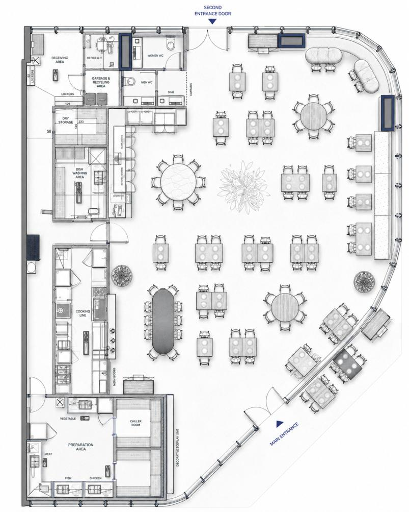
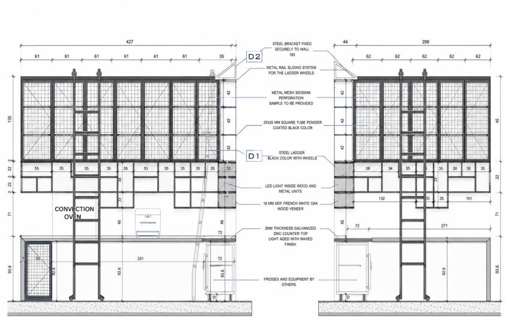
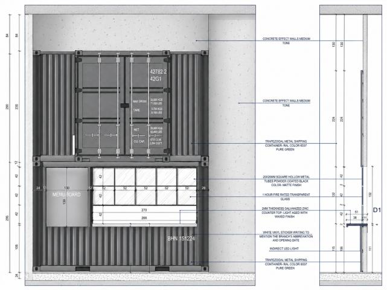
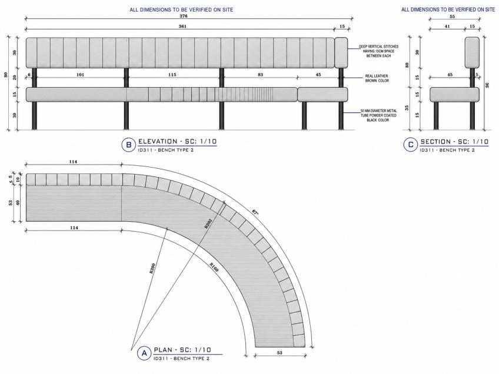
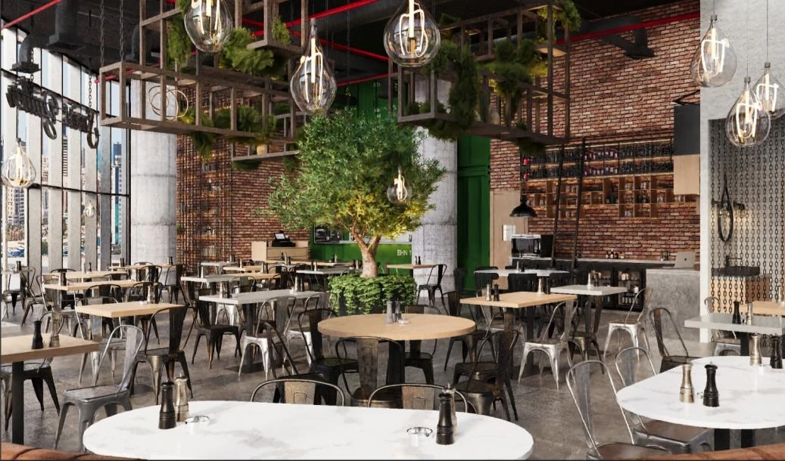
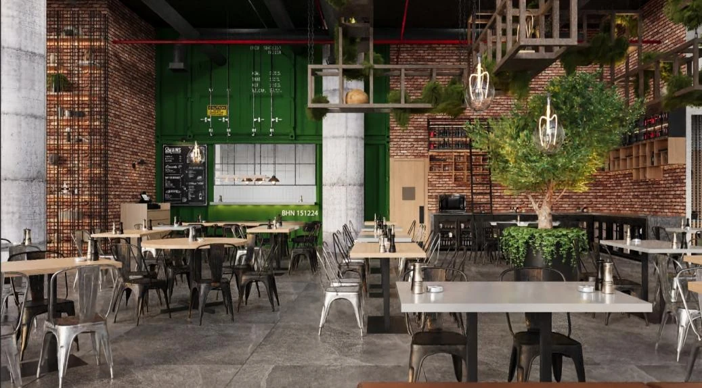

Modern Steakhouse Project
SWISS BUTTER
Swiss Butter is a casual steakhouse centered around a simple, signature dining experience. The space carries an industrial yet warm character, combining exposed brick, raw concrete, black ceiling details, metal chairs, timber tabletops, and bold green feature elements. Hanging greenery, open counter views, and warm ambient lighting soften the interior, creating a cozy nighttime atmosphere that feels casual, energetic, and memorable.
 01 / 04
01 / 04“Swiss Butter is a casual steakhouse centered around a simple, signature dining experience. The space carries an industrial yet warm character, combining exposed brick, raw concrete, black ceiling details, metal chairs, timber tabletops, and bold green feature elements. Hanging greenery, open counter views, and warm ambient lighting soften the interior, creating a cozy nighttime atmosphere that feels casual, energetic, and memorable.”
Moodboard / material palette
DESIGN
DIRECTION
The original material, colour and furniture direction prepared for the project.

Plans & technical drawings / 03
DESIGN
DOCUMENTATION
Plans, elevations, sections and technical studies are presented on a clean white field to preserve legibility. Open any drawing for a full-screen view.




3D visuals / 04
SPATIAL
EXPERIENCE
Photorealistic views communicating materiality, lighting, furniture composition and atmosphere.


